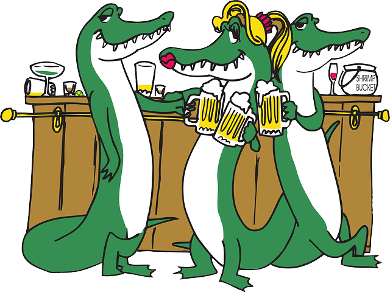
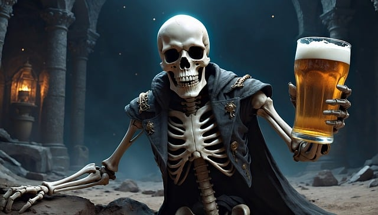
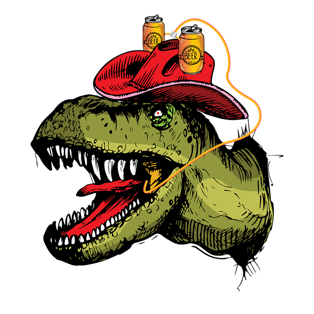
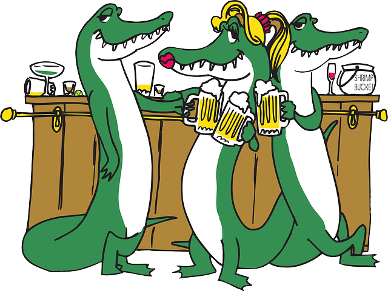
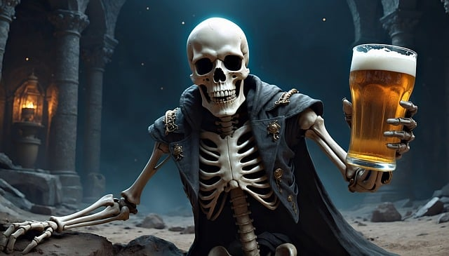
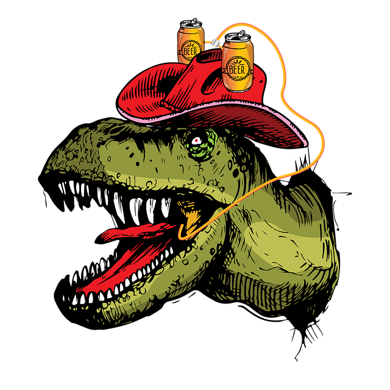

Welcome to Dear Beer Located in the heart of Barcelona, Dear Beer is a vibrant new bar designed for craft beer lovers and socializers alike. Whether you're a seasoned beer aficionado or just dipping your toes into the world of brews, Dear Beer has something for everyone. Our cozy yet modern ambiance, with rustic wooden décor and lighting, sets the perfect scene for relaxing with friends or meeting new people. We pride ourselves on curating a warm, inviting atmosphere where the community can gather, sip, and savor great conversation over exceptional beers.
Craft Beer Selection At Dear Beer, we believe beer is an experience, and we take pride in offering a diverse selection of craft beers from local and international breweries. Our rotating taps feature everything from crisp lagers and rich stouts to bold IPAs and experimental seasonal brews. Not sure what to try? Our knowledgeable bartenders are always ready to guide you through the options, offering recommendations based on your taste preferences. We also have an impressive bottle collection, so whether you're in the mood for a rare find or a local favorite, you'll discover something new each time you visit.
More Than Just Beer While our name might say “beer,” Dear Beer is about so much more. We offer a curated menu of delicious small plates and shareable bites that pair perfectly with your brew of choice. From gourmet pretzels and artisan cheeses to crispy flatbreads and charcuterie boards, every dish is crafted with care to complement our drinks menu. On weekends, our bar comes alive with live music from local artists, and we frequently host events like trivia nights, beer tastings, and brewer meet-and-greets, making Dear Beer a true destination for entertainment and fun.
Join the Dear Beer Family Whether you're popping in after work, celebrating with friends, or exploring the world of craft beer for the first time, Dear Beer is the place to be. Our mission is to create a welcoming space where everyone feels at home, and our friendly staff is dedicated to making each visit memorable. Follow us on social media to stay updated on our latest events and beer releases, or simply stop by to say hello. Raise a glass and be part of our growing Dear Beer community — we can’t wait to share a drink with you!
 






A crisp, refreshing lager with a smooth balance of flavor that caters to both casual drinkers and craft beer enthusiasts. The initial sip greets you with a light, clean malt sweetness. 8% Alc content

A subtle hint of honeyed biscuit. This is quickly followed by a delicate floral note from noble hops, lending the beer a mild bitterness that keeps the sweetness in check. 8% Alc content
Soft undertones of citrus and fresh-cut grass emerge, adding layers of complexity without overwhelming the palate. 7% Alc content

light to medium ale, with a slight carbonation that gives it a lively yet smooth texture. The finish is refreshingly dry, leaving just a touch of bitterness and a lingering crispness. 6% Alc content

A rich, earthy beer that brings the flavors of the forest into every sip. It opens with a toasty malt backbone, offering warm notes of caramel and lightly roasted bread, balanced by a subtle sweetness.6% Alc content

Vibrant, modern pale ale designed for the urban explorer who craves bold, lively flavors. It pours a golden amber hue, immediately enticing with aromatic bursts of tropical fruit and citrus. The first sip delivers a bright punch of juicy mango, pineapple, and grapefruit. 6% Alc content